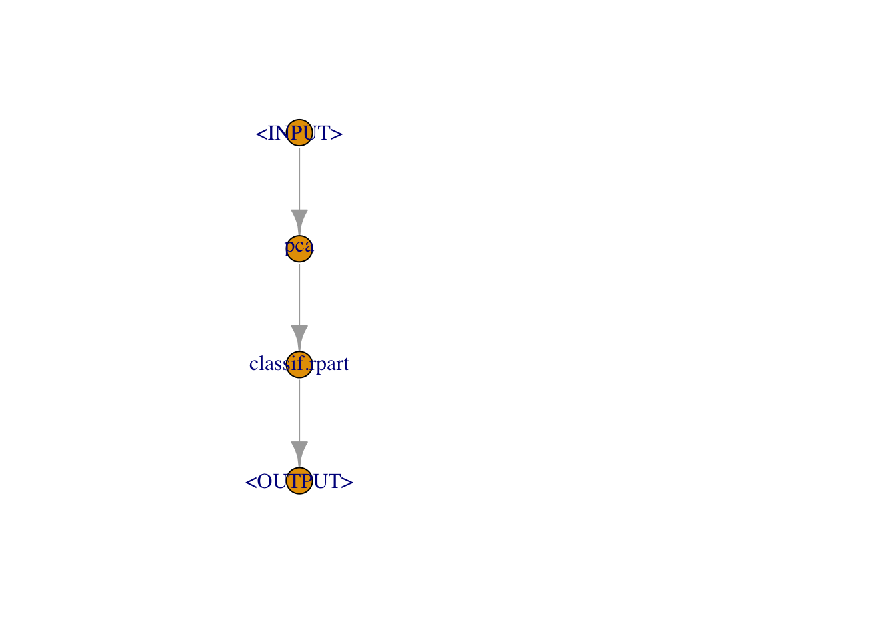
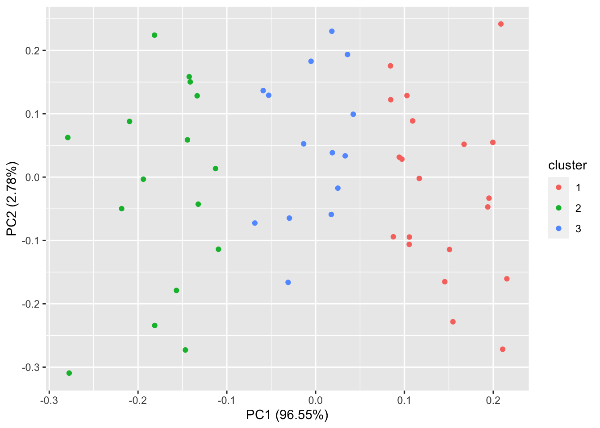

PCA in mlr3 Pipelines
Setup
A PCA Example
Our goal here will be to extract the PCA matrix from the mlr3 pipeline.
This will allow us to create custom & performant plots as necessary.
task
task <- tsk("iris")
task
task$task_type
task$data()[, summary(Species)]## <TaskClassif:iris> (150 x 5): Iris Flowers
## * Target: Species
## * Properties: multiclass
## * Features (4):
## - dbl (4): Petal.Length, Petal.Width, Sepal.Length, Sepal.Width
## [1] "classif"
## setosa versicolor virginica
## 50 50 50pipeline
graph <- po("pca") %>>%
po("learner", lrn("classif.rpart"))
graph
graph$plot()
## Graph with 2 PipeOps:
## ID State sccssors prdcssors
## pca <<UNTRAINED>> classif.rpart
## classif.rpart <<UNTRAINED>> pcapca.results
graph$state$pca
summary(graph$state$pca)## Standard deviations (1, .., p=4):
## [1] 2.0562689 0.4926162 0.2796596 0.1543862
##
## Rotation (n x k) = (4 x 4):
## PC1 PC2 PC3 PC4
## Petal.Length 0.85667061 -0.17337266 0.07623608 0.4798390
## Petal.Width 0.35828920 -0.07548102 0.54583143 -0.7536574
## Sepal.Length 0.36138659 0.65658877 -0.58202985 -0.3154872
## Sepal.Width -0.08452251 0.73016143 0.59791083 0.3197231
## Importance of components:
## PC1 PC2 PC3 PC4
## Standard deviation 2.0563 0.49262 0.2797 0.15439
## Proportion of Variance 0.9246 0.05307 0.0171 0.00521
## Cumulative Proportion 0.9246 0.97769 0.9948 1.00000predict
preds <- graph$predict(task)
preds## $classif.rpart.output
## <PredictionClassif> for 150 observations:
## row_ids truth response
## 1 setosa setosa
## 2 setosa setosa
## 3 setosa setosa
## ---
## 148 virginica virginica
## 149 virginica virginica
## 150 virginica virginicarpart.results
graph$state$classif.rpart$model %>% summary()## Call:
## rpart::rpart(formula = task$formula(), data = task$data(), xval = 0)
## n= 150
##
## CP nsplit rel error
## 1 0.50 0 1.00
## 2 0.42 1 0.50
## 3 0.01 2 0.08
##
## Variable importance
## PC1 PC2 PC3 PC4
## 76 16 5 3
##
## Node number 1: 150 observations, complexity param=0.5
## predicted class=setosa expected loss=0.6666667 P(node) =1
## class counts: 50 50 50
## probabilities: 0.333 0.333 0.333
## left son=2 (50 obs) right son=3 (100 obs)
## Primary splits:
## PC1 < -1.553145 to the left, improve=50.000000, (0 missing)
## PC2 < -0.2525312 to the right, improve= 8.833619, (0 missing)
## PC3 < 0.2814886 to the left, improve= 7.539683, (0 missing)
## PC4 < -0.1267052 to the right, improve= 3.717799, (0 missing)
## Surrogate splits:
## PC2 < 0.5701557 to the right, agree=0.7, adj=0.1, (0 split)
##
## Node number 2: 50 observations
## predicted class=setosa expected loss=0 P(node) =0.3333333
## class counts: 50 0 0
## probabilities: 1.000 0.000 0.000
##
## Node number 3: 100 observations, complexity param=0.42
## predicted class=versicolor expected loss=0.5 P(node) =0.6666667
## class counts: 0 50 50
## probabilities: 0.000 0.500 0.500
## left son=6 (44 obs) right son=7 (56 obs)
## Primary splits:
## PC1 < 1.142805 to the left, improve=35.795450, (0 missing)
## PC3 < 0.09944118 to the left, improve= 9.459459, (0 missing)
## PC2 < -0.2493429 to the left, improve= 6.876061, (0 missing)
## PC4 < -0.1267052 to the right, improve= 5.490578, (0 missing)
## Surrogate splits:
## PC2 < -0.2493429 to the left, agree=0.72, adj=0.364, (0 split)
## PC3 < 0.09944118 to the left, agree=0.63, adj=0.159, (0 split)
## PC4 < 0.0166062 to the right, agree=0.60, adj=0.091, (0 split)
##
## Node number 6: 44 observations
## predicted class=versicolor expected loss=0.02272727 P(node) =0.2933333
## class counts: 0 43 1
## probabilities: 0.000 0.977 0.023
##
## Node number 7: 56 observations
## predicted class=virginica expected loss=0.125 P(node) =0.3733333
## class counts: 0 7 49
## probabilities: 0.000 0.125 0.875Notice, this autoplot method within mlr3viz only works for tasks of type “cluster”. We get an Error otherwise for an unknown plot type.
We can test this out here. Unsure of why this is not styled using
default ggplot2 geom_point styling correctly on
Windows.
auoplot.pca.mlr3viz.taskclust
task_clust <- tsk("usarrests")
graph_clust <- po("pca") %>>%
po("learner", lrn("clust.kmeans"), centers = 3)
graph_clust$train(task_clust)
preds_clust <- graph_clust$predict(task_clust)
# mlr3viz:::autoplot.PredictionClust(preds_clust$clust.kmeans.output, task, type = "pca")
autoplot(preds_clust$clust.kmeans.output, task_clust, type = "pca")
## $clust.kmeans.output
## NULLReverse Engineer ggplot::autoplot of class prcomp
How do we extract the core PCA calculation and plotting matrix out of this function call to recreate a graph like this?
autoplot.prcomp
ggfortify:::autoplot.prcomp## function (object, data = NULL, scale = 1, x = 1, y = 2, variance_percentage = TRUE,
## ...)
## {
## plot.data <- ggplot2::fortify(object, data = data)
## plot.data$rownames <- rownames(plot.data)
## if (is_derived_from(object, "prcomp")) {
## ve <- object$sdev^2/sum(object$sdev^2)
## PC <- paste0("PC", c(x, y))
## x.column <- PC[1]
## y.column <- PC[2]
## loadings.column <- "rotation"
## lam <- object$sdev[c(x, y)]
## lam <- lam * sqrt(nrow(plot.data))
## }
## else if (is_derived_from(object, "princomp")) {
## ve <- object$sdev^2/sum(object$sdev^2)
## PC <- paste0("Comp.", c(x, y))
## x.column <- PC[1]
## y.column <- PC[2]
## loadings.column <- "loadings"
## lam <- object$sdev[c(x, y)]
## lam <- lam * sqrt(nrow(plot.data))
## }
## else if (is_derived_from(object, "factanal")) {
## if (is.null(attr(object, "covariance"))) {
## p <- nrow(object$loading)
## ve <- colSums(object$loading^2)/p
## }
## else ve <- NULL
## PC <- paste0("Factor", c(x, y))
## x.column <- PC[1]
## y.column <- PC[2]
## scale <- 0
## loadings.column <- "loadings"
## }
## else if (is_derived_from(object, "lfda")) {
## ve <- NULL
## PC <- paste0("PC", c(x, y))
## x.column <- PC[1]
## y.column <- PC[2]
## scale <- 0
## loadings.column <- NULL
## }
## else {
## stop(paste0("Unsupported class for autoplot.pca_common: ",
## class(object)))
## }
## if (scale != 0) {
## lam <- lam^scale
## plot.data[, c(x.column, y.column)] <- t(t(plot.data[,
## c(x.column, y.column)])/lam)
## }
## plot.columns <- unique(c(x.column, y.column, colnames(plot.data)))
## plot.data <- plot.data[, plot.columns]
## if (!is.null(loadings.column)) {
## loadings.data <- as.data.frame(object[[loadings.column]][,
## ])
## loadings.data$rownames <- rownames(loadings.data)
## loadings.columns <- unique(c(x.column, y.column, colnames(loadings.data)))
## loadings.data <- loadings.data[, loadings.columns]
## }
## else {
## loadings.data <- NULL
## }
## if (is.null(ve) | !variance_percentage) {
## labs <- PC
## }
## else {
## ve <- ve[c(x, y)]
## labs <- paste0(PC, " (", round(ve * 100, 2), "%)")
## }
## xlab <- labs[1]
## ylab <- labs[2]
## p <- ggbiplot(plot.data = plot.data, loadings.data = loadings.data,
## xlab = xlab, ylab = ylab, ...)
## return(p)
## }
## <bytecode: 0x13a763f98>
## <environment: namespace:ggfortify>fortify.prcomp
# sloop::s3_get_method("fortify.prcomp")
ggfortify:::fortify.prcomp## function (model, data = NULL, ...)
## {
## if (is(model, "prcomp")) {
## d <- as.data.frame(model$x)
## values <- model$x %*% t(model$rotation)
## }
## else if (is(model, "princomp")) {
## d <- as.data.frame(model$scores)
## values <- model$scores %*% t(model$loadings[, ])
## }
## else {
## stop(paste0("Unsupported class for fortify.pca_common: ",
## class(model)))
## }
## values <- ggfortify::unscale(values, center = model$center,
## scale = model$scale)
## values <- cbind_wraps(data, values)
## d <- cbind_wraps(values, d)
## post_fortify(d)
## }
## <bytecode: 0x13a7704d8>
## <environment: namespace:ggfortify>unscale
ggfortify::unscale## function (data, center = NULL, scale = NULL)
## {
## if (is.null(scale)) {
## scale <- attr(data, "scaled:scale")
## }
## if (is.null(center)) {
## center <- attr(data, "scaled:center")
## }
## if (!is.null(scale) && !is.logical(scale)) {
## data <- base::scale(data, center = FALSE, scale = 1/scale)
## }
## if (!is.null(center) && !is.logical(center)) {
## data <- base::scale(data, center = -center, scale = FALSE)
## }
## as.data.frame(data)
## }
## <bytecode: 0x13a775358>
## <environment: namespace:ggfortify>core-logic
cols_clusters <- c("Species")
data <- iris
cols_selected <- names(data)[! colnames(data) %in% cols_clusters]
model <- prcomp(data[, cols_selected], scale. = TRUE)
# unscaling via `ggfortify::unscale`
values <- model$x %*% t(model$rotation)
values <- scale(values, center = FALSE, scale = 1/model$scale)
values <- scale(values, center = -model$center, scale = FALSE)
plot.data <- cbind(values, data[cols_clusters], model$x)core-plot
#' Plot PCA
#'
#' @param model PCA-like instance
#' @param pcs The PCs to plot
#' @param data Joined to fitting result if provided.
#' @param scale scaling parameter, disabled by 0
#' @param variance_percentage show the variance explained by the principal component?
#' @param ... other arguments passed to [ggbiplot()]
scale <- 1
variance_percentage <- TRUE
pcs <- 1:2
# variance explained
ve <- model$sdev^2/sum(model$sdev^2)
loadings.column <- "rotation"
lam <- model$sdev[pcs]
lam <- lam * sqrt(nrow(plot.data))
cols_pcs <- paste0("PC", pcs)
# scaled PCA values
if (scale != 0) {
lam <- lam^scale
plot.data[, cols_pcs] <- t(t(plot.data[, cols_pcs])/lam)
}
loadings.data <- as.data.frame(model$rotation)
labs <- paste0(cols_pcs, " (", round(ve[pcs] * 100, 2), "%)")ggbiplot
# ggbiplot(plot.data = plot.data, loadings.data = loadings.data, xlab = labs[1], ylab = labs[2], ...)
ggbiplot(
plot.data = plot.data[c(cols_pcs, cols_clusters)],
loadings.data = loadings.data[cols_pcs],
xlab = labs[1], ylab = labs[2], colour = "Species"
)
Scattermore + mlr3 pipeline
Plotting lots of data.
prcomp Internals
It may be smarter to directly pass retx = TRUE to the
PipeOp po("pca") and grabbing from
graph$state$pca$x instead of re-writing core logic. This
way, x is only calculated once. This can be tested on large
data to determine the performance trade off (e.g. storing in mlr3
graph object).
prcomp.default
sloop::s3_get_method("prcomp.default")## function (x, retx = TRUE, center = TRUE, scale. = FALSE, tol = NULL,
## rank. = NULL, ...)
## {
## chkDots(...)
## x <- as.matrix(x)
## x <- scale(x, center = center, scale = scale.)
## cen <- attr(x, "scaled:center")
## sc <- attr(x, "scaled:scale")
## if (any(sc == 0))
## stop("cannot rescale a constant/zero column to unit variance")
## n <- nrow(x)
## p <- ncol(x)
## k <- if (!is.null(rank.)) {
## stopifnot(length(rank.) == 1, is.finite(rank.), as.integer(rank.) >
## 0)
## min(as.integer(rank.), n, p)
## }
## else min(n, p)
## s <- svd(x, nu = 0, nv = k)
## j <- seq_len(k)
## s$d <- s$d/sqrt(max(1, n - 1))
## if (!is.null(tol)) {
## rank <- sum(s$d > (s$d[1L] * tol))
## if (rank < k) {
## j <- seq_len(k <- rank)
## s$v <- s$v[, j, drop = FALSE]
## }
## }
## dimnames(s$v) <- list(colnames(x), paste0("PC", j))
## r <- list(sdev = s$d, rotation = s$v, center = cen %||% FALSE,
## scale = sc %||% FALSE)
## if (retx)
## r$x <- x %*% s$v
## class(r) <- "prcomp"
## r
## }
## <bytecode: 0x11b3b7ee8>
## <environment: namespace:stats>prcomp.formula
sloop::s3_get_method("prcomp.formula")## function (formula, data = NULL, subset, na.action, ...)
## {
## mt <- terms(formula, data = data)
## if (attr(mt, "response") > 0L)
## stop("response not allowed in formula")
## cl <- match.call()
## mf <- match.call(expand.dots = FALSE)
## mf$... <- NULL
## mf[[1L]] <- quote(stats::model.frame)
## mf <- eval.parent(mf)
## if (.check_vars_numeric(mf))
## stop("PCA applies only to numerical variables")
## na.act <- attr(mf, "na.action")
## mt <- attr(mf, "terms")
## attr(mt, "intercept") <- 0L
## x <- model.matrix(mt, mf)
## res <- prcomp.default(x, ...)
## cl[[1L]] <- as.name("prcomp")
## res$call <- cl
## if (!is.null(na.act)) {
## res$na.action <- na.act
## if (!is.null(sc <- res$x))
## res$x <- napredict(na.act, sc)
## }
## res
## }
## <bytecode: 0x13c6714b0>
## <environment: namespace:stats>PCA Pipeop
pca.results.keep_results
# methods that do not work
# graph_pca <- po("pca", param_vals = list(retx = TRUE)) %>>%
# graph_pca$param_set$values$pca.retx <- TRUE
graph_pca <- po("pca") %>>%
po("learner", lrn("classif.rpart"))
graph_pca$keep_results <- TRUE
graph_pca$train(task)
graph_pca$pipeops$pca$.result## $classif.rpart.output
## NULL
##
## $output
## <TaskClassif:iris> (150 x 5): Iris Flowers
## * Target: Species
## * Properties: multiclass
## * Features (4):
## - dbl (4): PC1, PC2, PC3, PC4This output object backend is of class
"DataBackendCbind" "DataBackend" "R6".
Unsure of exactly how it is storing the data.
pca.result.output.backend
graph_pca$pipeops$pca$.result$output$backend## <DataBackendCbind> (150x10)
## Sepal.Length Sepal.Width Petal.Length Petal.Width Species ..row_id PC1
## 5.1 3.5 1.4 0.2 setosa 1 -2.684126
## 4.9 3.0 1.4 0.2 setosa 2 -2.714142
## 4.7 3.2 1.3 0.2 setosa 3 -2.888991
## 4.6 3.1 1.5 0.2 setosa 4 -2.745343
## 5.0 3.6 1.4 0.2 setosa 5 -2.728717
## 5.4 3.9 1.7 0.4 setosa 6 -2.280860
## PC2 PC3 PC4
## 0.3193972 -0.02791483 -0.002262437
## -0.1770012 -0.21046427 -0.099026550
## -0.1449494 0.01790026 -0.019968390
## -0.3182990 0.03155937 0.075575817
## 0.3267545 0.09007924 0.061258593
## 0.7413304 0.16867766 0.024200858
## [...] (144 rows omitted)state is of exactly the same structure - with no
x object
(e.g. graph_pca$pipeops$pca$.result$output$data()) as
above.
pca.state
graph$state$pca %>% names()
graph_pca$state$pca %>% names()## [1] "sdev" "rotation" "center" "scale"
## [5] "dt_columns" "affected_cols" "intasklayout" "outtasklayout"
## [9] "outtaskshell"
## [1] "sdev" "rotation" "center" "scale"
## [5] "dt_columns" "affected_cols" "intasklayout" "outtasklayout"
## [9] "outtaskshell"Customized PCA Pipeop
We can create a customized PipeOp R6 class to store the
prcomp x object w/out keeping the entire results of the
pipeline.
R6.pipeop
PipeOpPCAX = R6::R6Class("PipeOpPCAX",
inherit = mlr3pipelines::PipeOpTaskPreproc,
public = list(
initialize = function(id = "pca_x", param_vals = list()) {
ps = paradox::ParamSet$new(params = list(
ParamLgl$new("center", default = TRUE, tags = c("train", "pca")),
ParamLgl$new("scale.", default = FALSE, tags = c("train", "pca")),
ParamLgl$new("retx", default = TRUE, tags = c("train", "pca")),
ParamInt$new("rank.", default = NULL, lower = 1, upper = Inf, special_vals = list(NULL), tags = c("train", "pca"))
))
super$initialize(id, param_set = ps, param_vals = param_vals, feature_types = c("numeric", "integer"))
}
),
private = list(
.train_dt = function(dt, levels, target) {
pcr = rlang::invoke(stats::prcomp, as.matrix(dt), .args = self$param_set$get_values(tags = "pca"))
self$state = pcr
pcr$x
},
.predict_dt = function(dt, levels) {
stats::predict(self$state, as.matrix(dt))
}
)
)
mlr_pipeops$add("pca_x", PipeOpPCAX)pca_x
graph_pcax <- po("pca_x", scale. = TRUE) %>>%
po("learner", lrn("classif.rpart"))
graph_pcax$train(task)## Warning: `invoke()` is deprecated as of rlang 0.4.0.
## Please use `exec()` or `inject()` instead.
## This warning is displayed once per session.
## This happened PipeOp pca_x's $train()## $classif.rpart.output
## NULLpca_x.state
graph_pcax$pipeops$pca$.result
graph_pcax$state$pca_x
graph_pcax$state$pca_x$x %>% head()## NULL
## Standard deviations (1, .., p=4):
## [1] 1.7083611 0.9560494 0.3830886 0.1439265
##
## Rotation (n x k) = (4 x 4):
## PC1 PC2 PC3 PC4
## Petal.Length 0.5804131 -0.02449161 0.1421264 -0.8014492
## Petal.Width 0.5648565 -0.06694199 0.6342727 0.5235971
## Sepal.Length 0.5210659 -0.37741762 -0.7195664 0.2612863
## Sepal.Width -0.2693474 -0.92329566 0.2443818 -0.1235096
## PC1 PC2 PC3 PC4
## [1,] -2.257141 -0.4784238 -0.12727962 0.024087508
## [2,] -2.074013 0.6718827 -0.23382552 0.102662845
## [3,] -2.356335 0.3407664 0.04405390 0.028282305
## [4,] -2.291707 0.5953999 0.09098530 -0.065735340
## [5,] -2.381863 -0.6446757 0.01568565 -0.035802870
## [6,] -2.068701 -1.4842053 0.02687825 0.006586116Note: transforming the PC data back to the original data via
ggfortify::unscale is an unnecessary step that the autoplot
function executes. The original data (other than the clusters that we
color by) doesn’t even get used in the plot. If it’s necessary that we
include the original data in our plots, we can select the columns as
needed. Thus, we don’t need to do this in our plot function.
Thus, the entire unscaling step can be removed.
Custom PCA big data biplot
geom_scattermore_pca_po
#' Plot PCA from a `prcomp` result using geom_scattermore
#'
#' @param model PCA-like instance
#' @param data Joined to fitting result if provided
#' @param color Cluster variable in `data` to color by
#' @param pcs The PCs to plot
#' @param scale scaling parameter, disabled by 0
#' @param variance_percentage show the variance explained by the principal component?
geom_scattermore_pca_po <- function(model, data, color, pcs = 1:2, scale = 1, variance_percentage = TRUE) {
# if using data.table data[,cols_clusters, with=F]
plot.data <- cbind(data[cols_clusters], model$x)
# variance explained
ve <- model$sdev^2/sum(model$sdev^2)
loadings.column <- "rotation"
cols_pcs <- paste0("PC", pcs)
# scaled PCA values
if (scale != 0) {
lam <- model$sdev[pcs]
lam <- lam * sqrt(nrow(model$x))
lam <- lam^scale
plot.data[, cols_pcs] <- t(t(plot.data[, cols_pcs])/lam)
}
loadings.data <- as.data.frame(model$rotation)
labs <- paste0(cols_pcs, " (", round(ve[pcs] * 100, 2), "%)")
g <- ggplot(plot.data[c(cols_pcs, color)]) +
geom_scattermore(aes(x = PC1, y = PC2, color = get(color)), pointsize = 2) +
labs(x = labs[1], y = labs[2], color = color)
return(g)
}It may be justified to set scale = 0 by default. There
is not much in literature describing why the PCs are each, by default,
multiplied by the standard deviation of the PCs times the square root of
the number of observations. The scale parameter is then
multiplied by this scaling.